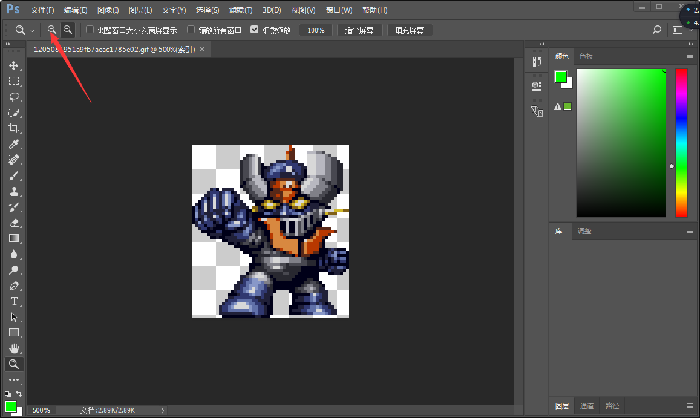
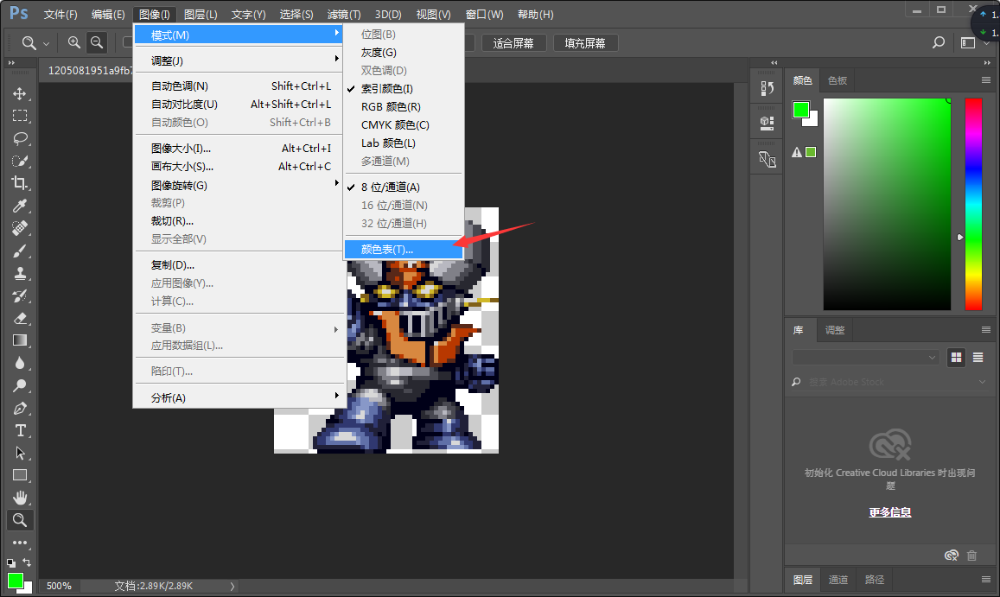
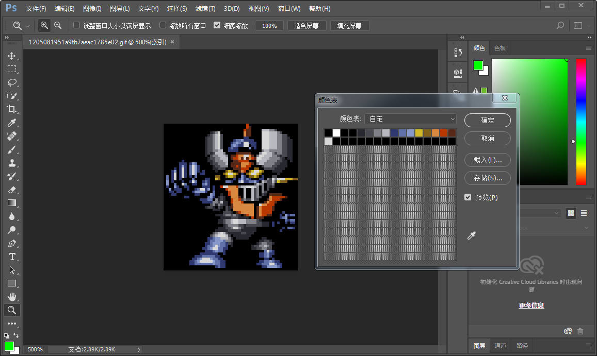
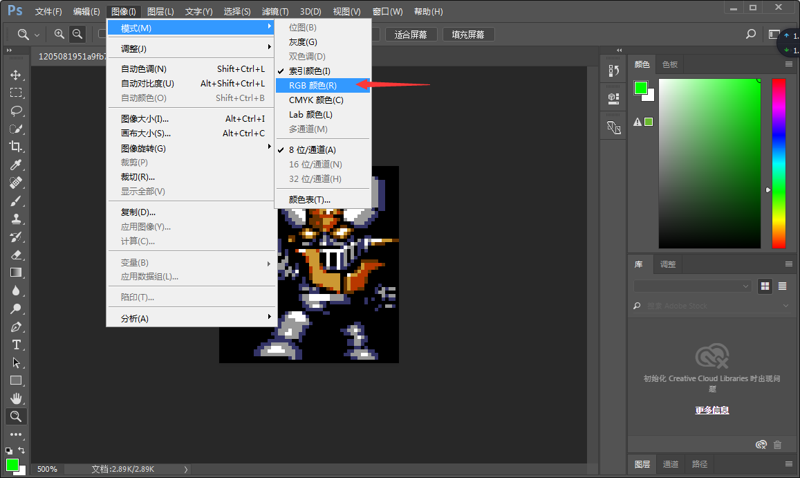
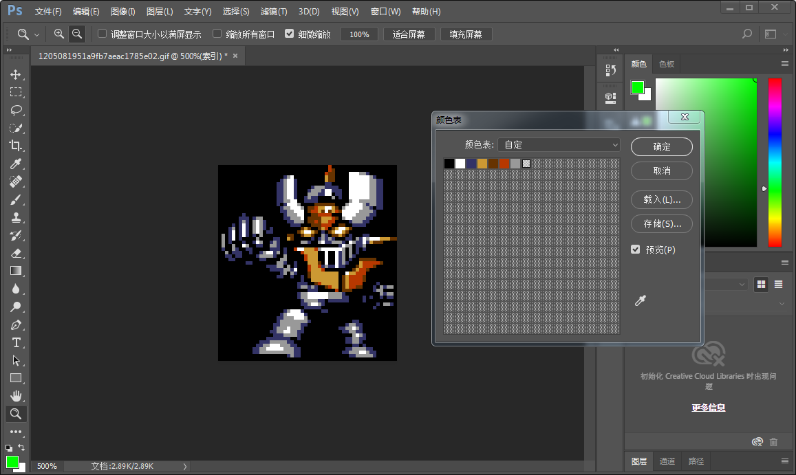
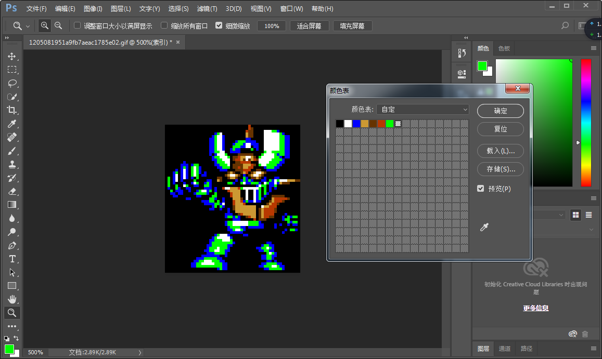
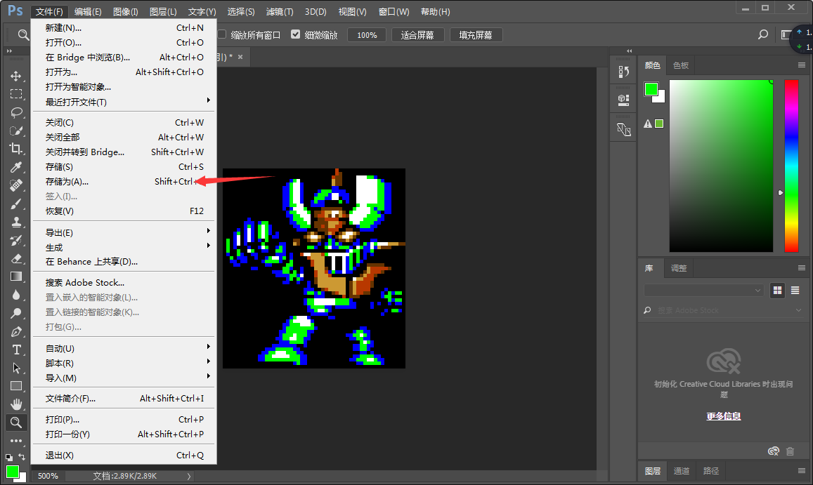
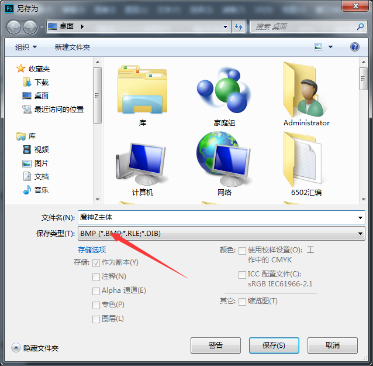
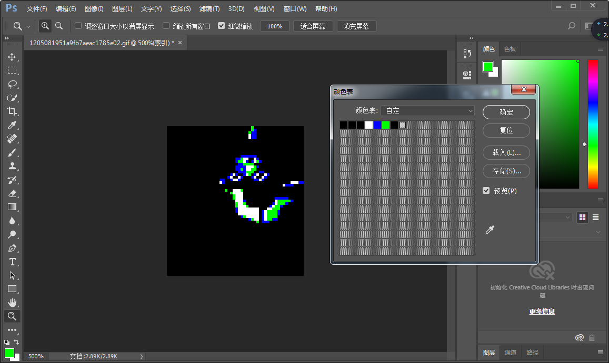
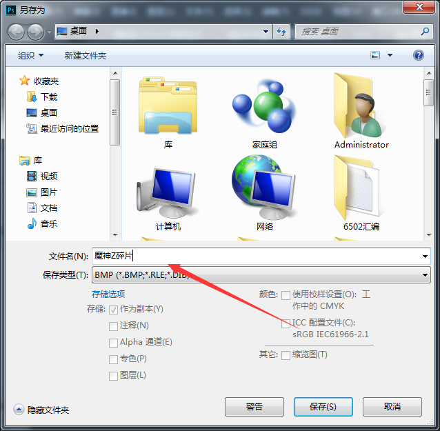

以下我用魔神Z为例，讲解处理过程的步骤
1.用PS打开原图，点击放大，使得图像处于合适的操作视图大小

2.选择颜色表，准备对图像进行处理

3.处理掉多余的杂色

4.将剩余需要的部分更改为6色
5.点一下RGB颜色，再点一下索引颜色，然后打开颜色表

6.这就是效果颜色，我们要将其更改为可以导入CT的颜色

7.将机体主体颜色更改为白绿蓝三色

8.将主体图片另存为

9.选择BMP格式，然后命名后保存

10.去除主体后，将机体碎片也更改为绿蓝白三色，然后另存为保存

